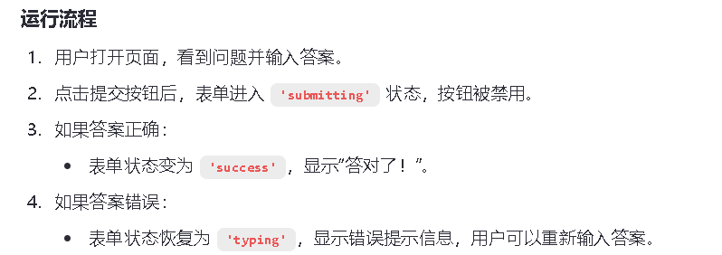

框架-React进阶-状态管理（概述）
状态管理：
随着应用规模不断变大，要有意识的去关注应用状态如何组织，以及数据之间如何在组件之间流动。冗余和重复的状态是缺陷的根源
组织好状态、保持状态更新逻辑的可维护性，以及跨组件共享状态。
用React响应输入：
- 通过使用React，可以不从代码层面来修改UI，例如不用编写禁用按钮、启动按钮、显示成功消息等命令。相反只需要描述组件在不同状态下希望展示的UI，例如初始状态、输入状态、成功状态等。根据不同的用户输入，触发不同的状态更改。
- 下例是一个React编写的反馈表单，理解如何使用status这个状态变量，来决定启动或禁用提交按钮，以及是否显示成功消息
import { useState } from 'react';
export default function Form() {
const [answer, setAnswer] = useState('');
const [error, setError] = useState(null);
const [status, setStatus] = useState('typing');
if (status === 'success') {
return <h1>答对了！</h1>
}
async function handleSubmit(e) {
e.preventDefault();
setStatus('submitting');
try {
await submitForm(answer);
setStatus('success');
} catch (err) {
setStatus('typing');
setError(err);
}
}
function handleTextareaChange(e) {
setAnswer(e.target.value);
}
return (
<>
<h2>城市测验</h2>
<p>
哪个城市有把空气变成饮用水的广告牌？
</p>
<form onSubmit={handleSubmit}>
<textarea
value={answer}
onChange={handleTextareaChange}
disabled={status === 'submitting'}
/>
<br />
<button disabled={
answer.length === 0 ||
status === 'submitting'
}>
提交
</button>
{error !== null &&
<p className="Error">
{error.message}
</p>
}
</form>
</>
);
}
function submitForm(answer) {
// 模拟接口请求
return new Promise((resolve, reject) => {
setTimeout(() => {
let shouldError = answer.toLowerCase() !== 'lima'
if (shouldError) {
reject(new Error('猜的不错，但答案不对。再试试看吧！'));
} else {
resolve();
}
}, 1500);
});
}
- 下例是一个React编写的反馈表单，理解如何使用status这个状态变量，来决定启动或禁用提交按钮，以及是否显示成功消息
{kind=link}

选择state结构：
- 良好的状态组织，可以区分开易于修改和调试的组件，频繁出问题的组件。
- 谨记：状态不应该包含冗余或重复的信息，因为多于状态会影响更新，进而导致bug
- 示例，这个表单中有一个多余的fullName状态变量。
import { useState } from 'react';
export default function Form() {
const [firstName, setFirstName] = useState('');
const [lastName, setLastName] = useState('');
const [fullName, setFullName] = useState('');
function handleFirstNameChange(e) {
setFirstName(e.target.value);
setFullName(e.target.value + ' ' + lastName);
}
function handleLastNameChange(e) {
setLastName(e.target.value);
setFullName(firstName + ' ' + e.target.value);
}
return (
<>
<h2>让我们帮你登记</h2>
<label>
名：{' '}
<input
value={firstName}
onChange={handleFirstNameChange}
/>
</label>
<label>
姓：{' '}
<input
value={lastName}
onChange={handleLastNameChange}
/>
</label>
<p>
你的票据将签发给：<b>{fullName}</b>
</p>
</>
);
}
- 就运行而言，这个fullName是可以省略，由firstNane+lastName组合，进而减少潜在的麻烦
- 示例，这个表单中有一个多余的fullName状态变量。
在组件之间共享状态：
- 有时会多个组件的状态同步更改，实现如此，可以将相关状态从这两个组件上移除，并添加到最近的父级组件，然后通过props将状态传递给这两个组件。这被称为状态提升。
- 示例：要求每次只能激活一个面板，使用“父组件将管理激活状态并为子组件指定prop，而不是将激活状态保留在各自的子组件中”来实现要求。
import { useState } from 'react';
export default function Accordion() {
const [activeIndex, setActiveIndex] = useState(0);
return (
<>
<h2>Almaty, Kazakhstan</h2>
<Panel
title="关于"
isActive={activeIndex === 0}
onShow={() => setActiveIndex(0)}
>
阿拉木图人口约200万，是哈萨克斯坦最大的城市。在1929年至1997年之间，它是该国首都。
</Panel>
<Panel
title="词源"
isActive={activeIndex === 1}
onShow={() => setActiveIndex(1)}
>
这个名字源于哈萨克语 <span lang="kk-KZ">алма</span>，是“苹果”的意思，通常被翻译成“满是苹果”。事实上，阿拉木图周围的地区被认为是苹果的祖籍，<i lang="la">Malus sieversii</i> 被认为是目前本土苹果的祖先。
</Panel>
</>
);
}
function Panel({
title,
children,
isActive,
onShow
}) {
return (
<section className="panel">
<h3>{title}</h3>
{isActive ? (
<p>{children}</p>
) : (
<button onClick={onShow}>
显示
</button>
)}
</section>
);
}
- 示例：要求每次只能激活一个面板，使用“父组件将管理激活状态并为子组件指定prop，而不是将激活状态保留在各自的子组件中”来实现要求。
对State进行保留和重置：
- 当重新渲染一个组件时，React会自己决定组件树中，哪些部分要保留更新、丢弃重建。
- React的自动处理机制较为完善，默认情况下React会保留书中与先前渲染的组件树匹配的部分。
- 示例，有时自动处理机制会错误处理，下面程序，输入内容后在切换收件人，并不会情况输入框，这可能导致用户不小心发错消息。
- chat.js用于导出Chat组件，返回一个输入textarea和提交button
import { useState } from 'react';
export default function Chat({ contact }) {
const [text, setText] = useState('');
return (
<section className="chat">
<textarea
value={text}
placeholder={'Chat to ' + contact.name}
onChange={e => setText(e.target.value)}
/>
<br />
<button>发送给 {contact.email}</button>
</section>
);
}
- ContactList.js用于导出ContactList组件，接收selectedContact、contacts、onSelect三个参数，返回一个一个ul列表，三个li标签的button。
export default function ContactList({
selectedContact,
contacts,
onSelect
}) {
return (
<section className="contact-list">
<ul>
{contacts.map(contact =>
<li key={contact.email}>
<button onClick={() => {
onSelect(contact);
}}>
{contact.name}
</button>
</li>
)}
</ul>
</section>
);
}
- App.js展示Messenger组件，聚合之前的组件
import { useState } from 'react';
import Chat from './Chat.js';
import ContactList from './ContactList.js';
export default function Messenger() {
const [to, setTo] = useState(contacts[0]);
return (
<div>
<ContactList
contacts={contacts}
selectedContact={to}
onSelect={contact => setTo(contact)}
/>
<Chat contact={to} />
</div>
)
}
const contacts = [
{ name: 'Taylor', email: 'taylor@mail.com' },
{ name: 'Alice', email: 'alice@mail.com' },
{ name: 'Bob', email: 'bob@mail.com' }
];
- chat.js用于导出Chat组件，返回一个输入textarea和提交button
- React允许覆盖默认行为，可以向组件传递一个唯一的key，如<chat key={email} />来强制重置状态，这会告诉React，如果收件人不同，应将其作为一个不同的Chat组件，需要使用新数据和UI，比如输入框，来重新创建该组件，现在接收者之间切换，就会重置输入框，即使渲染的是同一个组件
- App.js中为Chat组件添加特有的key，用于重新渲染chat组件
import { useState } from 'react';
import Chat from './Chat.js';
import ContactList from './ContactList.js';
export default function Messenger() {
const [to, setTo] = useState(contacts[0]);
return (
<div>
<ContactList
contacts={contacts}
selectedContact={to}
onSelect={contact => setTo(contact)}
/>
<Chat key={to.email} contact={to} />
</div>
)
}
const contacts = [
{ name: 'Taylor', email: 'taylor@mail.com' },
{ name: 'Alice', email: 'alice@mail.com' },
{ name: 'Bob', email: 'bob@mail.com' }
];
- App.js中为Chat组件添加特有的key，用于重新渲染chat组件
- 示例，有时自动处理机制会错误处理，下面程序，输入内容后在切换收件人，并不会情况输入框，这可能导致用户不小心发错消息。
迁移状态逻辑到Reducer中：
- 对于那些需要更新多个状态的组件而言，分散的事件处理程序会难以处理。
- 需要在组件外部将所有状态更新逻辑合并到一个称为reducer的函数中，这样事件处理程序就会变得简介，
- 只需要指定用户的actions。在文件的底部，reducer函数指定状态应该如何更新响应每个action
- 理解示例App.js
import { useReducer } from 'react';
import AddTask from './AddTask.js';
import TaskList from './TaskList.js';
export default function TaskApp() {
const [tasks, dispatch] = useReducer(
tasksReducer,
initialTasks
);
function handleAddTask(text) {
dispatch({
type: 'added',
id: nextId++,
text: text,
});
}
function handleChangeTask(task) {
dispatch({
type: 'changed',
task: task
});
}
function handleDeleteTask(taskId) {
dispatch({
type: 'deleted',
id: taskId
});
}
return (
<>
<h1>布拉格行程</h1>
<AddTask
onAddTask={handleAddTask}
/>
<TaskList
tasks={tasks}
onChangeTask={handleChangeTask}
onDeleteTask={handleDeleteTask}
/>
</>
);
}
function tasksReducer(tasks, action) {
switch (action.type) {
case 'added': {
return [...tasks, {
id: action.id,
text: action.text,
done: false
}];
}
case 'changed': {
return tasks.map(t => {
if (t.id === action.task.id) {
return action.task;
} else {
return t;
}
});
}
case 'deleted': {
return tasks.filter(t => t.id !== action.id);
}
default: {
throw Error('未知操作：' + action.type);
}
}
}
let nextId = 3;
const initialTasks = [
{ id: 0, text: '参观卡夫卡博物馆', done: true },
{ id: 1, text: '看木偶戏', done: false },
{ id: 2, text: '列侬墙图片', done: false }
];
- 理解示例App.js
使用Context深层传递参数：
- 通常使用props将信息从父组件传递给子组件，但是如果要在组件树中深入传递一些prop，或者树里的许多组件都需要相同的prop，那么传递prop会变得很麻烦
- Context允许父组件将一些信息，提供给下层的任何组件，不管组件多深层也无需通过props逐层透传。
- 示例，Heading组件通过访问最近的sSection组件来确定其标题级别，每个Section的级别是通过给父组件Section添加的级别确定。每个Section都向它下层的所有组件提供信息，不需要逐层传递props，而是通过Context来实现。
- LecelContext.js文件，默认导出LevelContext=createContext（0）
import { createContext } from 'react';
export const LevelContext = createContext(0);
- Heading.js文件，导出Heading组件，返回switch筛选标题等级
import { useContext } from 'react';
import { LevelContext } from './LevelContext.js';
export default function Heading({ children }) {
const level = useContext(LevelContext);
switch (level) {
case 0:
throw Error('标题必须在 Section 内！');
case 1:
return <h1>{children}</h1>;
case 2:
return <h2>{children}</h2>;
case 3:
return <h3>{children}</h3>;
case 4:
return <h4>{children}</h4>;
case 5:
return <h5>{children}</h5>;
case 6:
return <h6>{children}</h6>;
default:
throw Error('未知级别：' + level);
}
}
- Section.js文件，导出Section组件，返回一个section用于整理同一个级别LevelContext的内容
import { useContext } from 'react';
import { LevelContext } from './LevelContext.js';
export default function Section({ children }) {
const level = useContext(LevelContext);
return (
<section className="section">
<LevelContext.Provider value={level + 1}>
{children}
</LevelContext.Provider>
</section>
);
}
- App.js文件，最终到处展示Page组件页面。
import Heading from './Heading.js';
import Section from './Section.js';
export default function Page() {
return (
<Section>
<Heading>大标题</Heading>
<Section>
<Heading>一级标题</Heading>
<Heading>一级标题</Heading>
<Heading>一级标题</Heading>
<Section>
<Heading>二级标题</Heading>
<Heading>二级标题</Heading>
<Heading>二级标题</Heading>
<Section>
<Heading>三级标题</Heading>
<Heading>三级标题</Heading>
<Heading>三级标题</Heading>
</Section>
</Section>
</Section>
</Section>
);
}
- LecelContext.js文件，默认导出LevelContext=createContext（0）
- 示例，Heading组件通过访问最近的sSection组件来确定其标题级别，每个Section的级别是通过给父组件Section添加的级别确定。每个Section都向它下层的所有组件提供信息，不需要逐层传递props，而是通过Context来实现。
使用Reducer和Context拓展应用：
- Reducer帮助合并组件的状态更新逻辑，Context帮助将信息深入传递给其他组件，而这可以合并使用，管理复杂应用的状态。
- 使用reducer来管理一个有复杂状态的父组件，组件树中任何深度的其他组件都可以通过context来读取状态，还可以dispatch一些action来更新状态。
- TasksContext.js文件，导出TaskProvider组件、useTasks函数等等
import { createContext, useContext, useReducer } from 'react';
const TasksContext = createContext(null);
const TasksDispatchContext = createContext(null);
export function TasksProvider({ children }) {
const [tasks, dispatch] = useReducer(
tasksReducer,
initialTasks
);
return (
<TasksContext.Provider value={tasks}>
<TasksDispatchContext.Provider
value={dispatch}
>
{children}
</TasksDispatchContext.Provider>
</TasksContext.Provider>
);
}
export function useTasks() {
return useContext(TasksContext);
}
export function useTasksDispatch() {
return useContext(TasksDispatchContext);
}
function tasksReducer(tasks, action) {
switch (action.type) {
case 'added': {
return [...tasks, {
id: action.id,
text: action.text,
done: false
}];
}
case 'changed': {
return tasks.map(t => {
if (t.id === action.task.id) {
return action.task;
} else {
return t;
}
});
}
case 'deleted': {
return tasks.filter(t => t.id !== action.id);
}
default: {
throw Error('未知操作：' + action.type);
}
}
}
const initialTasks = [
{ id: 0, text: '哲学家之路', done: true },
{ id: 1, text: '参观寺庙', done: false },
{ id: 2, text: '喝抹茶', done: false }
];
- AddTask.js文件，导出AddTask组件，返回一个input+button
import { useState, useContext } from 'react';
import { useTasksDispatch } from './TasksContext.js';
export default function AddTask({ onAddTask }) {
const [text, setText] = useState('');
const dispatch = useTasksDispatch();
return (
<>
<input
placeholder="添加任务"
value={text}
onChange={e => setText(e.target.value)}
/>
<button onClick={() => {
setText('');
dispatch({
type: 'added',
id: nextId++,
text: text,
});
}}>添加</button>
</>
);
}
let nextId = 3;
- TaskList.js文件导出TaskList组件，返回一个列表ul
import { useState, useContext } from 'react';
import { useTasks, useTasksDispatch } from './TasksContext.js';
export default function TaskList() {
const tasks = useTasks();
return (
<ul>
{tasks.map(task => (
<li key={task.id}>
<Task task={task} />
</li>
))}
</ul>
);
}
function Task({ task }) {
const [isEditing, setIsEditing] = useState(false);
const dispatch = useTasksDispatch();
let taskContent;
if (isEditing) {
taskContent = (
<>
<input
value={task.text}
onChange={e => {
dispatch({
type: 'changed',
task: {
...task,
text: e.target.value
}
});
}} />
<button onClick={() => setIsEditing(false)}>
保存
</button>
</>
);
} else {
taskContent = (
<>
{task.text}
<button onClick={() => setIsEditing(true)}>
编辑
</button>
</>
);
}
return (
<label>
<input
type="checkbox"
checked={task.done}
onChange={e => {
dispatch({
type: 'changed',
task: {
...task,
done: e.target.checked
}
});
}}
/>
{taskContent}
<button onClick={() => {
dispatch({
type: 'deleted',
id: task.id
});
}}>
删除
</button>
</label>
);
}
- App.js文件，展示标题，整体构建
import AddTask from './AddTask.js';
import TaskList from './TaskList.js';
import { TasksProvider } from './TasksContext.js';
export default function TaskApp() {
return (
<TasksProvider>
<h1>在京都休息一天</h1>
<AddTask />
<TaskList />
</TasksProvider>
);
}
- TasksContext.js文件，导出TaskProvider组件、useTasks函数等等
- 使用reducer来管理一个有复杂状态的父组件，组件树中任何深度的其他组件都可以通过context来读取状态，还可以dispatch一些action来更新状态。